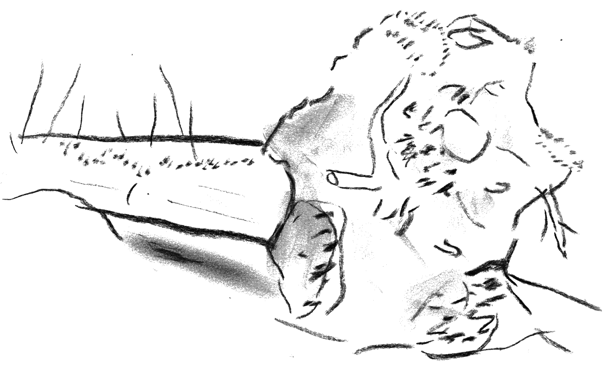

nature
windthrow
A windthrow means a tree fallen over by a strong wind. For forest owners windthrows mean economic loss, and they have often been collected soon after a storm to be sold. But for certain species, dead trees are vital as habitats. For these species, it’s essential to have enough rotten wood close by to survive. Death is a matter of life for many living things.
Sources:
Metsä meidän jälkeemme